Home Page Shop Characters Glossary
The Heros
Introduction to the Characters
Rand al'Thor
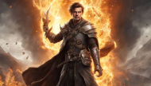
Rand is one of the main characters in The Wheel of Time The saga opens with, The Eye of the World. It introduces Rand al'Thor, a shepherd from Two Rivers. While learning the truth of his lineage and the prophecy about him, he is told that the Dark One is trying to find him,which is why the village was attacked. To protect his home from being targeted again, Rand flees with his friends, Mat Cauthon and Perrin Aybara. Thus begins Rand's journey to becoming a channeler and living out the prophecy as the Dragon Reborn.
Early in the novel, Rand discovers that the couple who raised him are not his blood parents. Rand is the reincarnation of Lews Therin the Dragon Reborn, fated to both destroy and save the world. Rand is the prophesied savior of the world, and so he is very powerful. He has the ability to channel the One Power, the force that drives the turning of the Wheel of Time. While many can wield the One Power,Rand is one of the strongest channelers. The One Power is split into five elements: Fire, Water, Earth,Air, and Spirit.
Rand has the ability to project his dreams on others, which suggests that he is very strong in Spirit. He's also good at creating weaves of Fire. Rand's natural strengths are enhanced by several angreal, objects that allow channels to draw more of the One Power, and sa'angreal, which are similar to angreal but even more powerful. Despite Rand's many powers as the Dragon Reborn, his greatest strength throughout Wheel of Time is his bond with other characters. At the end of the series, Rand's body dies, but he lives on. Because of Rand's mental link to Moridin, they are able to switch bodies during the Last Battle. Consequently, it is Moridin who actually dies. Through their bond to Rand, Min, Elayne, and Aviendha sense that this is what happened, and so they find no need to mourn their lover's death.
Perrin Aybara,
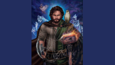
Perrin Aybara, also known as Perrin Goldeneyes and Young Bull, is one of the main protagonists in the series. He,together with Mat Cauthon and Rand al'Thor, is a strong ta'veren. He is also a wolfbrother, and has exceptional skills in manipulating Tel'aran'rhiod. He is married to Faile Bashere and held (unofficially) the title of Lord of the Two Rivers and later (officially) Lord Steward of the Dragon in the Two Rivers.
He grew up together with Mat Cauthon and Rand al'Thor in Emond's Field where they got into trouble quite a bit, Mat generally being the force behind it. He also knows Egwene al'Vere and Nynaeve al'Meara since he was young and has a close relationship with them. During the events of the story, he meets his Two Rivers friends on various occasions.
At some point he meets an Aiel trapped in a cage in the town of Remen and frees him. The Aiel is named Gaul and throughout the story becomes a close friend of Perrin, often accompanying him when Rand sends them on different missions.
Matrim "Mat" Cauthon
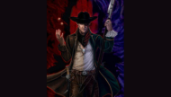
Mat was born and raised in Emond's Field in the Two Rivers to Abell and Natti Cauthon. He has two younger sisters, Bode and Eldrin. Both his parents ended up being neglectful, with his mother becoming a drunkard and his father becoming a lecher, and he often had to support his younger sisters. Mat has been close friends with Perrin Aybara and Rand al'Thor since childhood. He is well-liked in his village, but has always looked for his ticket to a better life. Growing up poor, he learned how to make a little coin go a long way through gambling and finesse, though sometimes his gambling and carousing got him into more trouble than it was worth.
Mat is a snarky, witty young man with a sharp tongue and rogue attitude. He's always down for a good time, no matter the circumstances. He loves to make people laugh. However, his witty and sarcastic exterior is a mask used to cover his deep-seated worries that he will become his lecherous father or drunken mother. He cares deeply for his loved ones, especially his younger sisters, often thinking of their needs before his own. When Moiraine arrives, Mat is forced to leave his sisters behind to keep them safe. While he has little interest in the responsibility that being the Dragon Reborn entails, but does wonder if it can be his ticket to a better life.
Mat is ta'veren, and is a focal point of the Wheel of Time. This allows him to survive the corruption of the ruby-hilted dagger for far longer than would usually be possible.In general, Mat has a strong aversion towards Aes Sedai, as with most things related to the One Power.
Egwene al'Vere
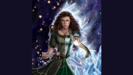
Egwene al'Vere is one of the main characters in The Wheel of Time. Egwene helps run the Winespring Inn in Emond's Field. She is a new member of the Women's Circle, and is considering apprenticing as a Wisdom. Egwene is wise beyond her years. She is determined, steadfast, and driven by logic. Egwene's ambition gives her an incredible sense of duty to herself, as well as the world around her. She is often torn between choosing something that would make everyone happy, or serving everyone the best she can. She knows that she is truly destined for great things.She has also had a sisterly relationship with Nynaeve for a very long time, and has also known Perrin Aybara and Mat Cauthon all her life. Egwene is believed to be one of the strongest channelers of the Age, although Nynaeve and Rand are more powerful than her in the One Power.
Nynaeve al'Meara
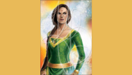
Nynaeve al'Meara is one of the main characters in The Wheel of Time. Nynaeve is fierce and assertive, and commands respect from her position as Wisdom. She is brash and unpredictable, but driven by her desire to heal. Her ability to cure even the sickest in the community allows many to overlook her more abrasive personality traits. Nynaeve is an extremely strong and powerful channeler, considered the most powerful the Tower has seen in a thousand years. Her first act of conscious channeling is an incredible surge of the One Power that is able to Heal everyone in the cave. She is also an expert in healing without the use of the One Power, such as using herbs and poultices. Her life as a Wisdom has made her an expert tracker, and she has some skill with a blade. However, since she first consciously channeled, her "listening to the wind" abilities have been dampened. This has since become a full block since coming to the White Tower, and she cannot channel unless experiencing anger.
Moiraine Damodred
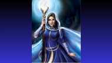Moiraine Damodred is one of the main characters in The Wheel of Time. Moiraine is a Cairhienin Aes Sedai of the Blue Ajah. She arrives in the Two Rivers with the knowledge that a young person living there is prophesied as the Dragon Reborn, with the capacity to either be the savior or the destroyer of humanity. Moiraine was born to House Damodred in Cairhien, the nation's royal family. She was the niece of the king.
Moiraine showed a talent for channeling, and was sent for training at the White Tower. During her days as novice and Accepted, she was close friends with Siuan Sanche and Alanna Mosvani. While she was in the Tower, her uncle inadvertently started the Aiel War after he violated the centuries-old truce between Cairhien and the Aiel. On 2 Danu 978 NE, Moiraine and Siuan bore witness to Gitara Moroso's Foretelling that the Dragon had been reborn while the Battle of the Shining Walls raged on Dragonmount outside the city, and bore witness to her immediately die from the shock and power.Moiraine did not know where or to whom they had been born, but she and Siuan knew that her mission was to find them before the Dark One began to wake. During the battle outside the city, her uncle was killed by the Aiel. House Damodred lost favor in Cairhien due to his actions in starting the war, and her family fell from grace. Moiraine chose to abandon the cutthroat politics of Cairhien and devoted herself to her life as an Aes Sedai. Soon after the end of the Aiel War, she met Lan Mandragoran in Chachin, and did not like him at first. He tossed her into a pond, and she made ants attack him in the night in revenge. Yet they grew close enough to trust each other deeply, and she bonded him as her Warder, and invited him to join her secret quest for the Dragon Reborn.She began to spend more and more time away from the White Tower, arousing the suspicion of her sisters, and it was publicly believed that she and Siuan were adversaries.
al'Lan Mandragon
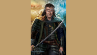al'Lan Mandragoran, (pronounced: AHL'LAN man-DRAG-or-an; /ɑlˈlæːn mænˈdɹɑ.gɔˌɹɑn/) known commonly as Lan, is also known as Lord of the Seven Towers, Lord of the Lakes, True Blade of Malkier, Defender of the Wall of First Fires, Bearer of the Sword of the Thousand Lakes, May He Sever the Shadow, Dai Shan, and known to the Aiel as Aan'allein. He is the king and only survivor of the royal line of the fallen kingdom of Malkier. He is a Warder, initially bonded to Moiraine Damodred, with the bond passing to Myrelle Berengari upon Moiraine's apparent death. He was later sent to Nynaeve al'Meara, whom he marries. Nynaeve subsequently acquires Lan's bond from Myrelle, and he is currently bonded to Nynaeve. After leading the Malkieri forces at the Last Battle, he finally dons the crown of Malkier.
Thom Merrilin
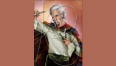Thomdril "Thom" Merrilin (TOM MER-rih-lihn) is a gleeman and, formerly, a court bard in Andor.
Elayne Trakand
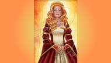Elayne Trakand (ee-LAIN trah-KAND) is by the Grace of the Light, Queen of Andor and Cairhien, Defender of the Realm, Protector of the People, High Seat of House Trakand, and Aes Sedai of the Green Ajah. layne is the only member of House Trakand in memory and the first to sit on the Lion Throne to be born with suffient strength to become full Aes Sedai. Elayne has a potential in the One Power of 8(+5), equal to that of Egwene al'Vere, although may not have reached this level yet. Only a dozen female channelers are stronger, or have a greater potential, than her, namely Nynaeve, Alivia, Sharina, Talaan, Tamela, Viendre, Someryn and the female Forsaken). She is the strongest channeler that the White Tower has seen in over a thousand years.
Min Farshaw
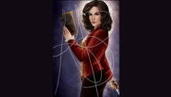Elmindreda "Min" Farshaw (pronounced: MIN) is a woman, originally from Baerlon, who has viewings at times of auras and visions that can tell something about the future of the person being viewed. Min has also become a recent student of philosophy since the death of Herid Fel. She is the second woman to become the lover of Rand al'Thor, the Dragon Reborn, and is his only lover who is by his side at all times.
Aviendha
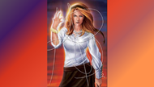Aviendha (ah-vee-EHN-dah) is a Wise One of the Nine Valleys sept of the Taardad Aiel, and one of the three lovers of Rand al'Thor. Aviendha was once of the Far Dareis Mai, and was sent west of the Spine of the World to hunt for He Who Comes With the Dawn. On her return to the Three-Fold Land, she was made to give up the spear and train with the Wise Ones, as she was discovered to have the ability to channel the One Power, and was made an apprentice after her first visit to Rhuidean. She did not want to admit her feelings to Rand as he had declared his love to Elayne Trakand, but after he became the car'a'carn, she eventually became the second woman to become his lover, and the first to lie with him.
Siun Sanche
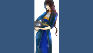Siuan Sanche (pronounced: SWAHN SAHN-chay; /ˈsʲwɑn ˈsan.t͡ʃɛɪ/) was an Aes Sedai of the Blue Ajah. She was born in Tear and grew up a fisher girl. She was formerly the Amyrlin Seat but was deposed in a coup d'etat led by Elaida do Avriny a'Roihan, stilled, and briefly imprisoned. Her first Warder, Alric, was murdered during the White Tower coup. She later ran away and joined the rebel Aes Sedai. While there, she was Healed from stilling, regained her status as Aes Sedai (albeit as a low-ranking sister), and bonded a new Warder, Gareth Bryne, former Captain-General of the Queen's Guards of Andor, former lover of Queen Morgase, and one of the Five Great Captains. Eventually, she agreed to marry him after the Last Battle, [3] but unfortunately, neither of them survived to marry.
The Villians
Trollocs
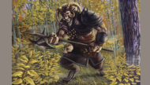A Trolloc (pronounced: TRAHL-lohk) is a type of Shadowspawn created in the Age of Legends that comprises the bulk of the Dark One's armies. A horrifying crossing of human and animal stock with physical characteristics of both. While capable of speech and a cruel and twisted humor, they are less intelligent than humans and require supervision in battle. They are carnivorous, as is shown by many references in the first two books of Trollocs eating their human prey, sadistic, fearful, and violent. Unlike other Shadowspawn, Trollocs are social creatures, grouped by several distinct tribes. They are called “Twisted Ones” by the wolves.
Myrddral
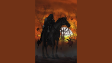Myrddraal (pronounced: MUHRD-draal) are Shadowspawn, muscular and serpent-quick, with lank black hair and waxy-white skin. They have no eyes, but can "see" with perfect clarity. Their appearance never varies; they are always male in appearance, with identical features and builds described as being like that of a tall man. They were the battle leaders of the Shadow during the imprisonment of the Forsaken, after the demise of the Dreadlords.
The Forsaken
The 13 Forsaken were channelers who served the side of the Shadow in the War of Power. They were known to followers of the Shadow as "Those Chosen To Rule The World Forever," or simply the Chosen. Among the Atha'an Shadar (Seanchan Darkfriends) they are known formally as Da'concion (or "the Chosen Ones"). The Aiel call them the Shadowsouled. Although during the War of Power there were dozens of Forsaken leading the armies of the Shadow, as time passed, the term "Forsaken" came to refer to only the thirteen most powerful among them, who were caught in the sealing of the Bore and imprisoned with the Dark One. The horrific deeds of each were remembered long after their disappearance. In the Third Age, these thirteen were such infamous symbols of the Shadow that mothers would use stories of their exploits to frighten children.
Ishamel
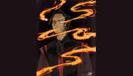Known beyond any doubt to have been the most powerful of the Forsaken. Like the Dragon, he had reached the maximum level of strength that a human being could achieve in the One Power. When he was resurrected as Moridin, he maintained the same level of power as the same soul inhabited both bodies. Ironically, the fact that he was the strongest of the Forsaken in terms of his channeling abilities is largely irrelevant, as he was known to have used the True Power to what appeared to be the complete exclusion of the One Power, and the amount of the True Power that he was permitted to draw upon vastly exceeded the amount of the One Power he could draw upon.
Rahvin
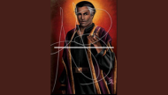Rahvin was one of only three known individuals to be within the ++1 tier, putting him in the same category as both Rand al'Thor and Ishamael. Rahvin's ability and position among the Forsaken are not detailed, but despite his strength, he does not appear to be amongst the more prominent Forsaken. He displays a propensity towards Compulsion.
Damandred
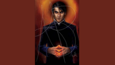Mesaana once stated that had Lews Therin never existed, Demandred would have been the most acclaimed Aes Sedai of the Age of Legends. Even given his tendency to overestimate himself, his strategic planning abilities and combat skills were known to have been extraordinary.
Sammael
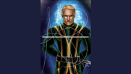Known to be strong in the One Power, but little else. Although reputed for crafting elaborate schemes and being a skilled tactician, Graendal considered him unsubtle and Lanfear implied his tactics had never brought him victory in battle when Lews Therin Telamon had led the opposing force. His strategic abilities tended more towards defense than offense
Aginor
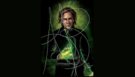Despite Aginor's considerable strength in the One Power, he appears to have been somewhat subservient to Demandred and flat-out admitted on one occasion to being terrified of Ishamael. As such, his lack of talent for combat with the Power may have contributed substantially to his apparently lackluster stature amongst the Forsaken. In fact, his apparent lack of combat or strategic planning abilities led Demandred to believe that he had been Chosen only due to his expertise at genetic engineering. He retained the same strength in his incarnation as Osan'gar.
Balthamel
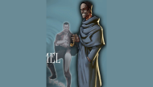Based on statements by Robert Jordan, it is speculated that Aginor possessed enough ability to channel the Power so that overwhelming Balthamel in a direct contest of strength would not have been terribly difficult for him. Additionally, Balthamel appeared to have been afraid of Logain Ablar, who, though rated at ++2 in strength in the One Power, was relatively limited in his knowledge of how to use it. He retained the same strength in his incarnation as Aran'gar. His abilities apparently tended more towards espionage than open combat.
Asmodean
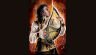Asmodean's skill was as a composer, so one would expect him to not be as dangerous as some of his more martially-inclined peers. While this is true, his raw strength is only two levels below the strongest possible channeler and he was still one of the strongest men of his Age.
Be'lal

Nothing is known of Be'lal's capabilities aside from his strength level. He was said to have been envious of Ishamael and Lanfear especially, though the reasons for this envy are unknown. While the weakest of the male Forsaken, he was still incredibly strong for his Age and his skill as a general and swordsman would likely have made him a deadly and dangerous opponent.
Lanfear
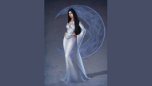She was rumored during the Third Age to have been the second strongest of the Forsaken, although this was likely a result of her infamy than her actual strength. In terms of raw strength, she is ninth strongest and Rahvin was of the opinion that either he or Sammael would have been able to overpower Lanfear if it had been necessary. This metric, however, does not take her skill level or Rahvin's ego into account. Lanfear lost a notable amount of her natural channeling capabilities during her time as a captive of the Eelfinn, and her subsequent resurrection Cyndane retained this loss.
Semirhage
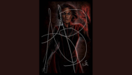Her strength in the One Power was never elaborated on, but it is implied she was an extremely dexterous weaver due to her mastery of torture techniques and understanding of the workings of the human body. Despite having been in the same power tier as Lanfear, she did not have the same level of authority that Lanfear had.
Mesaana
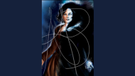In the prologue to the sixth book it is noted that: "Mesaana...matched well with Semirhage on most points...had strengths to lay against weaknesses". However, Mesaana was known to demonstrate a measure of deference to Semirhage. Brandon Sanderson noted that Mesaana was weaker than Nynaeve, although Nynaeve's raw strength level was 4(+9) with an eventual potential of 3(+10). It is possible that the ease with which Nynaeve learned new weaves allowed her to eclipse Mesaana's own skills relatively quickly, or that Mesaana was not terribly skilled with combative weaves or was not a very dexterous channeler.
Graendal
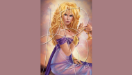Graendal is fourth strongest among the female Forsaken, although her skill in using combative weaves, her dexterity, and her various other talents may have offset her relative lack of strength. After her reemergence in the Third Age, Graendal managed to get her hands on an angreal, boosting her base strength considerably. She retained the same strength in her incarnation as Hessalam.
Moghedian
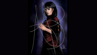Known to be the weakest of all of the Forsaken in terms of pure strength in the One Power. However, her mastery of Tel'aran'rhiod was unsurpassed (with the possible exception of Ishamael's skill there, as he was the only known Dreamer amongst the Forsaken), despite Lanfear claiming to have had superior abilities in the dream world.